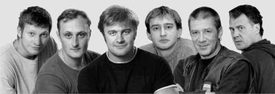

| Спектакль "Смерть Тарелкина" | |
Пресс-релиз спектакля "Смерть Тарелкина"
Продюсерский центр "БРАТ" представляет:
Комедию-шутку "Смерть Тарелкина"
по одноименной пьесе А.В.Сухово-Кобылина

Комедию-шутку "Смерть Тарелкина"
по одноименной пьесе А.В.Сухово-Кобылина
В ролях:
Сановник в генеральском чине Максим Кузмич Варравин- Константин Хабенский
Коллежский советник Кандид Касторович Тарелкин- Андрей Краско
Частный пристав Антиох Елпидифович Ох- Андрей Зибров
Исполняющий должность квартального
надзирателя Иван Антонович Расплюев- Михаил Пореченков
Купец Попугайчиков, помещик Чванкин, доктор Унмеглихкейт,
прачка Брандахлыстова, дворник Пахомов- Артур Ваха
Мушкетеры богатырских размеров Качала и Шатала- Олег Андреев
В роли режиссера - Юрий Бутусов
В роли художника - Александр Шишкин
По форме, это, конечно, антреприза - потому что названные актеры и режиссер, которые давно не нуждаются в представлении, работают в разных театрах и даже городах. У антреприз в последнее время репутация не самая лучшая и заслуженно. Но мы, очевидно, имеем дело с антрепризой, которая козыряет против антрепризных законов, и это помогает ей выиграть.
Козырь первый.
Постановочная группа собралась в компанию не ради отдельно взятого спектакля (как это практикуется в большинстве антреприз). Создатели "Смерти Тарелкина" - известная петербургская театральная команда, на счету которой творческие удачи вплоть до премии "Золотая маска". Семь лет назад четверо из названных актеров вышли из одной аудитории Театральной академии и во главе с режиссером Юрием Бутусовым обосновались на малой сцене Театра им. Ленсовета. После первых же спекталкей - "Войцека" и "В ожидании Годо" - о них заговорили как о готовом театре, главной надежде театрального Петербурга, его молодой крови. Дело было за малым - за помещением. Его-то в Петербурге не нашлось. Поэтому Хабенский и Пореченков нынче - актеры Московского художественного театра п/р О.Табакова, а Юрий Бутусов - постоянный приглашенный режиссер райкинского "Сатирикона" и того же МХТ. Но воспоминания об интенсивной и плодотворной питерской молодости, тоска по ансамблю единомышленников подвигают наших героев на новые совместные проекты. Спектакль "Смерть Тарелкина" родился три года назад. Пресса обеих столиц, съевшая собаку на антрепризных халтурах, признала постановку удачным компромиссом между репертуарным и коммерческим театром и сочла достойной основательного анализа (с профессиональными отзывами о спектакле можно ознакомиться на сайте www.kinobrat.ru/msg/5.html).
Козырь второй.
Типовая антреприза пользует бульварные поделки. Питерская сборная предпочла классику высшего разряда. Выбор, сделанный - напомним - три года назад, оказался пророческим. "Смерть Тарелкина" объявлена в столице главной пьесой прошлого сезона. На нее сделали ставку три московских театра: в одной из постановок генерала Варравина играет Александр Калягин, и критики уже назвали эту работу лучшей в репертуаре артиста последних лет. "Смерть Тарелкина" в обновленной петербургской Александринке в следующем сезоне должен выпустить лидер авангардного европейского театра Маттиас Лангхофф. Ажиотаж вокруг пьесы сложился неспроста. Ибо сюжет ее - оголтелый беспредел полицейского режима в одном российском околотке. Начинается пьеса с остроумнейшей пародии на монолог Гамлета "быть или не быть" (ее читает плут новейшей формации Кандид Тарелкин), а заканчивается жутчайшими полицейскими допросами в стиле гоголевской буффонады. В свое время блестящая комедия Сухово-Кобылина пролежала под цензорским сукном 30 лет (с 1870 по 1900 годы), и лишь знаменитый антрепренер Суворин умудрился добиться ее постановки в своем театре. Спустя сто лет за нее взялся режиссер Бутусов. Актеры разыграли ее в лучших традициях средневекового фарса, чьей главной функцией было: разделываться со страхами, высмеивая по полной программе героев своих кошмарных снов. Когда скатываешься от смеха под стул, глядя на Варравина-Хабенского с бутафорским шрамом через все лицо, или на полицейского отморозка - "примата" Расплюева-Пореченкова, или на обаятельнейшего блаженного Тарелкина-Краско, или на Артура Ваху, меняющего лики как перчатки, упрекаешь ребят только в том, что слишком много на сцене откровенных монстров, чтобы их можно было на самом деле испугаться, и чересчур смешно.
Козырь третий.
Художественно-общедоступный площадной театр, в которой с институтских времен играет эта честная компания, способен впитывать из воздуха сегодняшнее настроение публики и нанизывать его на живую нить сюжета. А публика сегодня в автобусе и в метро обсуждает уже не сериалы и даже не надуманные "силиконовые" реалити-шоу, а реальные разборки из серии "человек и закон" - вроде дел Ходорковского и Иванниковой. Остается лишь добавить, что участники спектакля -- люди, понятно, не самые свободные -- сами вышли на продюсера с предложением возобновить "Смерть Тарелкина". Вполне вероятно, что мы увидим актуальнейшее из театральных зрелищ последнего времени: готовую пародию на телевизионный жанр, которого еще не существует, но который, по всем рассчетам, должен вот-вот появиться - реалити-шоу "судебное разбирательство".
Начало в 19-00
Пресс-атташе
Жанна Зарецкая
zhannet@afisha.ru